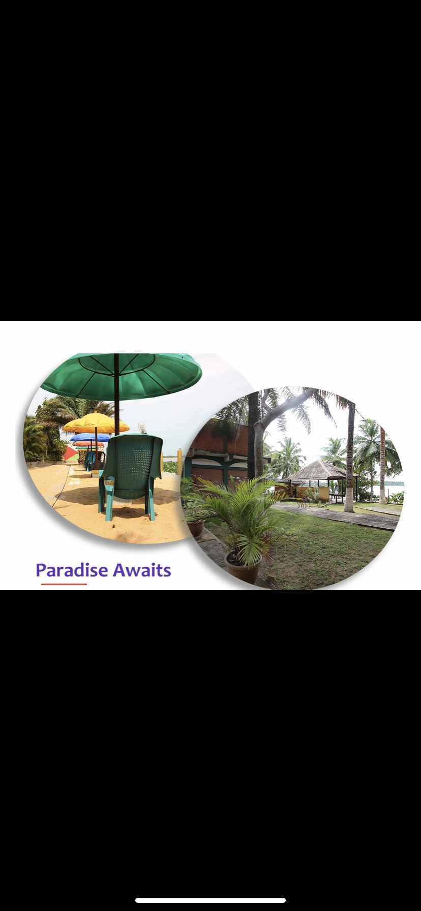
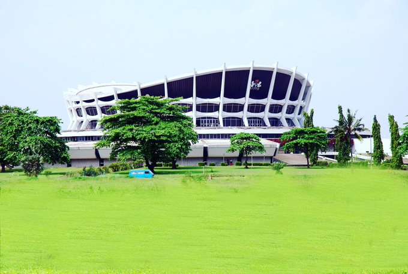

Visting Whispering Palms is one of my childhood memory that i can never forget. I and my family went there in the summer of 2014 and it was my elder brother's birthday and it took us about 4hours to get there.The people Badargry call it their pride of visit because it full of alot of amusement things. Whispering Palms is a resort and recreational center which comprises of
- Mini Musuem.
- Zoo and One of Badagary biggest fish pond.
- Swimming Pool and Lagoon Extention for boat cruise
- Playground .

This is an experience that can never be forgotten. My primary was an excusio to the Nation Arts Theater when i was in Primary 5. the National Arts Theatre is the primary cantre for the performing arts in Nigeria. The monument is located Igandu, Surulere, Lagos. Its contruction is so elegant and which caught my attention first on sight.Here are the break down of things I did at the National Theatre:
- Art Section